class: center, middle .title[Jihadist War of Ideas] .subtitle[Tracking Diffusion of Topics from Extremist Statements] .author[Laila A. Wahedi, PhD] .institution[MDI, McCourt School of Public Policy, <br> Georgetown University] .date[July 18, 2018] .center[] .footnote[Created with [{Remark.js}](http://remarkjs.com/) using [{Markdown}](https://daringfireball.net/projects/markdown/) + [{MathJax}](https://www.mathjax.org/) + [{Liminal}](http://www.jmlilly.net/liminal.zip)] --- class: center background-color:#AF002B .footnote[Follow along at Wahedi.US, under Current Presentation Laila A. Wahedi, PhD -- @lwahedi -- law98@georgetown.edu] <h1 style="text-transform: none; color:white; text-align:left; margin-bottom:0px">Why are al Qaeda and ISIS so important?</h1> <img class="plain" src="../figures/line.png" style="float:left; padding:0;margins:0;margin-bottom:0px; align:left; height: 5px; width:75%"> <div style="width:32%; float:left"> 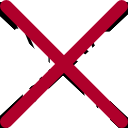 <h3 style="color:white;">AQ has few men</h3> </div> <div style="width:32%; float:left"> <h3 style="color:white;">Draw resources from affiliates </h3> </div> <div style="width:32%; float:left"> <h3 style="color:white;">Many groups have territory</h3> </div> </div> --- class: center background-color:#AF002B .footnote[ Follow along at Wahedi.US, under Current Presentation Laila A. Wahedi, PhD -- @lwahedi -- law98@georgetown.edu] <h1 style="text-transform: none; margin-bottom:0px;text-align:left;color:white;">What is Power?</h1> <img class="plain" src="../figures/line.png" style="float:top; padding:0;margins:0;margin-bottom:0px; align:left; height: 5px; width:55%"> <div style="width:100%;">  <h3 style="color:white;">How much work can be done over time.</h3> <h3 style="color:white;">=</h3> <h3 style="color:white;">How much energy can be expended at once.</h3> </div> --- class: center background-color:#AF002B .footnote[ Follow along at Wahedi.US, under Current Presentation Laila A. Wahedi, PhD -- @lwahedi -- law98@georgetown.edu] <h1 style="text-transform: none; margin-bottom:0px;text-align:left;color:white;">What is Power?</h1> <img class="plain" src="../figures/line.png" style="float:top; padding:0;margins:0;margin-bottom:0px; align:left; height: 5px; width:75%"> <div style="width:100%;">  <br><br> <h1 style="color:white;">Attaining Objectives Through Expenditure of Energy</h1> </div> --- class: center background-color:#AF002B .footnote[ Follow along at Wahedi.US, under Current Presentation Laila A. Wahedi, PhD -- @lwahedi -- law98@georgetown.edu] <h1 style="text-transform: none; margin-bottom:0px;text-align:left;color:white;">Substitutable Paths to Objectives</h1> <img class="plain" src="../figures/line.png" style="float:left; padding:0;margins:0;margin-bottom:0px; align:left; height: 5px; width:75%"> <div style="width:100%;">  </div> --- class: center background-color:#AF002B .footnote[Follow along at Wahedi.US, under Current Presentation Laila A. Wahedi, PhD -- @lwahedi -- law98@georgetown.edu] <h1 style="text-transform: none; color:white; text-align:left; margin-bottom:0px">Influence</h1> <img class="plain" src="../figures/line.png" style="float:left; padding:0;margins:0;margin-bottom:0px; align:left; height: 5px; width:75%"> <div style="width:33%; float:left"> <h3 style="color:white;">Advertising Audience</h3> </div> <div style="width:33%; float:left"> <h3 style="color:white;">Agenda Setting</h3> </div> <div style="width:33%; float:left"> <h3 style="color:white;">Legitimacy</h3> </div> --- class: center background-color:#AF002B .footnote[Follow along at Wahedi.US, under Current Presentation Laila A. Wahedi, PhD -- @lwahedi -- law98@georgetown.edu] <h1 style="text-transform: none; color:white; text-align:left; margin-bottom:0px">AQ and IS Try to Influence</h1> <img class="plain" src="../figures/line.png" style="float:left; padding:0;margins:0;margin-bottom:0px; align:left; height: 5px; width:75%"> <div style="width:33%; float:left"> <h3 style="color:white;">Video Lectures and Statements</h3> </div> <div style="width:33%; float:left"> <h3 style="color:white;">Social Media</h3> </div> <div style="width:33%; float:left"> <h3 style="color:white;">Magazines</h3> </div> --- class: center background-color:#01BAEF .footnote[ Follow along at Wahedi.US, under Current Presentation Laila A. Wahedi, PhD -- @lwahedi -- law98@georgetown.edu] <h1 style="text-transform: none; margin-bottom:0px;text-align:left;color:white;">Measuring Influence</h1> <img class="plain" src="../figures/line.png" style="float:left; padding:0;margins:0;margin-bottom:0px; align:left; height: 5px; width:75%"> <div style="height:100%;">  <h3 style="color:white;">Track topics and rhetoric through text from a target population after official statements</h3> </div> --- class: center background-color:#01BAEF .footnote[Follow along at Wahedi.US, under Current Presentation Laila A. Wahedi, PhD -- @lwahedi -- law98@georgetown.edu] <h1 style="text-transform: none; color:white; text-align:left; margin-bottom:0px">Constructing the Measure</h1> <img class="plain" src="../figures/line.png" style="float:left; padding:0;margins:0;margin-bottom:0px; align:left; height: 5px; width:75%"> <div style="width:33%; float:left"> <h3 style="color:white;">Select and Clean Text</h3> </div> <div style="width:33%; float:left"> <img style="width:75%" src="../figures/power_rhetoric/topic.png"> <h3 style="color:white;">Topic Modeling</h3> </div> <div style="width:33%; float:left"> <h3 style="color:white;">Assess Influence</h3> </div> --- class: center background-color:#01BAEF .footnote[Follow along at Wahedi.US, under Current Presentation Laila A. Wahedi, PhD -- @lwahedi -- law98@georgetown.edu] <h1 style="text-transform: none; color:white; text-align:left; margin-bottom:0px">Selecting Text</h1> <img class="plain" src="../figures/line.png" style="float:left; padding:0;margins:0;margin-bottom:0px; align:left; height: 5px; width:75%"> <div style="width:50%; float:left">  <h3 style="color:white;">Power Source</h3> </div> <div style="width:50%; float:left"> <h3 style="color:white;">Target Audience</h3> </div> --- class: center background-color:#01BAEF .footnote[Follow along at Wahedi.US, under Current Presentation Laila A. Wahedi, PhD -- @lwahedi -- law98@georgetown.edu] <h1 style="text-transform: none; color:white; text-align:left; margin-bottom:0px">Pre-processing: Reduce Noise</h1> <img class="plain" src="../figures/line.png" style="float:left; padding:0;margins:0;margin-bottom:0px; align:left; height: 5px; width:75%"> <div style="width:33%; float:left"> <h3 style="color:white;">Separate Into Documents</h3> </div> <div style="width:33%; float:left"> <h3 style="color:white;">Stem Words</h3> </div> <div style="width:33%; float:left"> <h3 style="color:white;">Filter Words</h3> </div> --- class: center background-color:#01BAEF .footnote[Follow along at Wahedi.US, under Current Presentation Laila A. Wahedi, PhD -- @lwahedi -- law98@georgetown.edu] <h2 style="text-transform: none; color:white; text-align:left; margin-bottom:0px">Identifying Content</h2> <img class="plain" src="../figures/line.png" style="float:left; padding:0;margins:0;margin-bottom:0px; align:left; height: 5px; width:75%"> <div style="width:33%; float:left"> <img style="width:60%" src="../figures/power_rhetoric/matrix.png"> <h2 style="color:white;">Topic Modeling</h2> <p style="color:white;">Identify informative words that <strong>distinguish between </strong> clusters of documents.</p> </div> <div style="width:33%; float:left"> <h2 style="color:white;">Document Embeddings</h2> <p style="color:white;">Train context vectors in semantic space that can predict words in document, and compare distances.</p> </div> <div style="width:33%; float:left"> <h2 style="color:white;">Word Importance</h2> <p style="color:white;">Subtract frequency of each word in target text at t-1 from frequency in source. Take top n words.</p> </div> --- class: center background-color:#01BAEF .footnote[Follow along at Wahedi.US, under Current Presentation Laila A. Wahedi, PhD -- @lwahedi -- law98@georgetown.edu] <h2 style="text-transform: none; color:white; text-align:left; margin-bottom:0px">Topic Modeling: Dimensionality Reduction</h2> <img class="plain" src="../figures/line.png" style="float:left; padding:0;margins:0;margin-bottom:0px; align:left; height: 5px; width:75%"> <div style="width:33%; float:left"> <img style="width:60%" src="../figures/power_rhetoric/matrix.png"> <h2 style="color:white;">Topic Modeling</h2> <p style="color:white;">Identify informative words that <strong>distinguish between </strong> clusters of documents.</p> </div> <div style="width:33%; float:left"> <h2 style="color:white;">Good</h2> <p style="color:white;">Distinguish topics within source text</p> </div> <div style="width:33%; float:left"> <h2 style="color:white;">Bad</h2> <p style="color:white;">Care about target text: content may span whole magazine</p> </div> --- class: center background-color:#01BAEF .footnote[Follow along at Wahedi.US, under Current Presentation Laila A. Wahedi, PhD -- @lwahedi -- law98@georgetown.edu] <h1 style="text-transform: none; color:white; text-align:left; margin-bottom:0px">Assessing Topics</h1> <img class="plain" src="../figures/line.png" style="float:left; padding:0;margins:0;margin-bottom:0px; align:left; height: 5px; width:75%"> <h2 style="color:white;text-align:left">Atheoretical, subjective</h2> <h2 style="color:white;text-align:left">Sample clustered documents and important words</h2> <ul style="color:white;text-align:left"> <li>LDA did best with nouns, but still did poorly</li> <li>NMF produced intuitive topics for both documents and words</li> </ul> --- class: center background-color:#AF002B .footnote[Follow along at Wahedi.US, under Current Presentation Laila A. Wahedi, PhD -- @lwahedi -- law98@georgetown.edu] <h1 style="text-transform: none; color:white; text-align:left; margin-bottom:0px">What are they saying?</h1> <img class="plain" src="../figures/line.png" style="float:left; padding:0;margins:0;margin-bottom:0px; align:left; height: 5px; width:75%"> <div style="max-width:49%; max-height:30%; float:left"> <img style="width:75%" src="../figures/power_rhetoric/religion_cloud.png"> <h3 style="color:white;">Religion</h3> </div> <div style="width:49%; height:30%; float:left"> 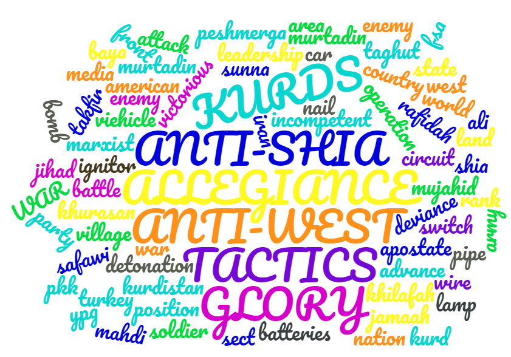 <h3 style="color:white;">Conflict</h3> </div> <br> <div style="width:49%; float:left"> <img style="max-width:75%; float:top" src="../figures/power_rhetoric/life_cloud.png"> <h3 style="color:white;">Lifestyle</h3> </div> <div style="width:49%; float:left"> 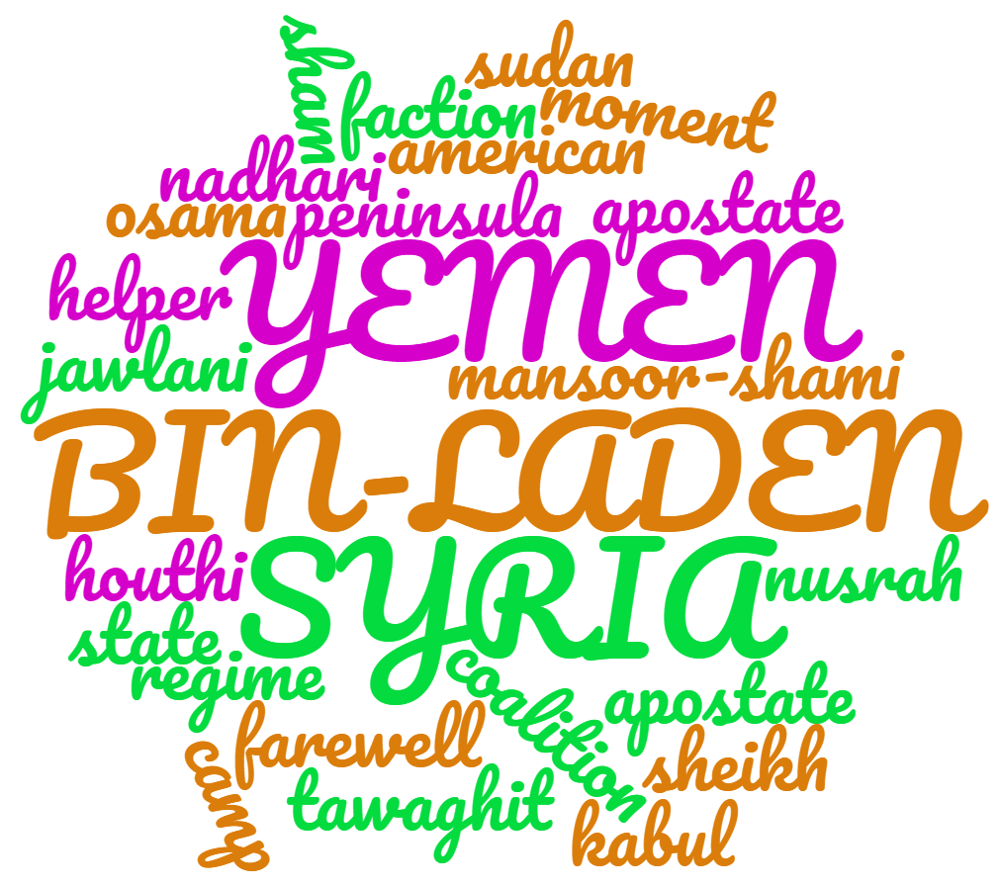 <h3 style="color:white;">News</h3> </div> --- class: center background-color:#01BAEF .footnote[Follow along at Wahedi.US, under Current Presentation Laila A. Wahedi, PhD -- @lwahedi -- law98@georgetown.edu] <h2 style="text-transform: none; color:white; text-align:left; margin-bottom:0px">Document Embeddings</h2> <img class="plain" src="../figures/line.png" style="float:left; padding:0;margins:0;margin-bottom:0px; align:left; height: 5px; width:75%"> <div style="width:33%; float:left"> <h2 style="color:white;">Document Embeddings</h2> <p style="color:white;"><p style="color:white;">Train context vectors in semantic space that can predict words in document, and compare distances.</p></p> </div> <div style="width:33%; float:left">  <h2 style="color:white;">Good</h2> <p style="color:white;"><br>Allows substitution of similar words</p> </div> <div style="width:33%; float:left"> <h2 style="color:white;">Bad</h2> <p style="color:white;"><br>Context dependent: has to be trained on full range of words to learn similarity</p> </div> --- class: center background-color:#01BAEF .footnote[Follow along at Wahedi.US, under Current Presentation Laila A. Wahedi, PhD -- @lwahedi -- law98@georgetown.edu] <h2 style="text-transform: none; color:white; text-align:left; margin-bottom:0px">Word Importance</h2> <img class="plain" src="../figures/line.png" style="float:left; padding:0;margins:0;margin-bottom:0px; align:left; height: 5px; width:75%"> <div style="width:33%; float:left"> <h2 style="color:white;">Word Importance</h2> <p style="color:white;">Subtract frequency of each word in target text at t-1 from frequency in source. Take top n words.</p> </div> <div style="width:33%; float:left"> <h2 style="color:white;">Good</h2> <p style="color:white;"><br>Identify words across entire magazine</p> </div> <div style="width:33%; float:left">  <h2 style="color:white;">Bad</h2> <p style="color:white;"><br>Subject to random variation</p> </div> --- class: center background-color:#AF002B .footnote[ Follow along at Wahedi.US, under Current Presentation Laila A. Wahedi, PhD -- @lwahedi -- law98@georgetown.edu] <h1 style="text-transform: none; margin-bottom:0px;text-align:left;color:white;">Important Words: Dabiq 2</h1> <img class="plain" src="../figures/line.png" style="float:left; padding:0;margins:0;margin-bottom:0px; align:left; height: 5px; width:75%"> <div style="width:100%;"> 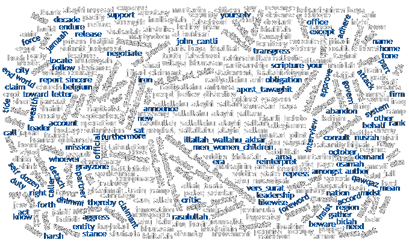 </div> --- class: center background-color:#01BAEF .footnote[Follow along at Wahedi.US, under Current Presentation Laila A. Wahedi, PhD -- @lwahedi -- law98@georgetown.edu] <h2 style="text-transform: none; color:white; text-align:left; margin-bottom:0px">Influence Assessment</h2> <img class="plain" src="../figures/line.png" style="float:left; padding:0;margins:0;margin-bottom:0px; align:left; height: 5px; width:75%"> <br> <h3 style="color:white;text-align:left">Compare target texts a time period prior to and after release of the statement</h3> <div style="width:33%; float:left"> <img style="width:60%" src="../figures/power_rhetoric/matrix.png"> <h2 style="color:white;">Topic Models</h2> <p style="color:white;">Compare topic word and topic frequency</p> </div> <div style="width:33%; float:left"> <h2 style="color:white;">Document Embeddings</h2> <p style="color:white;">Compare distance of context vectors</p> </div> <div style="width:33%; float:left"> <h2 style="color:white;">Word Importance</h2> <p style="color:white;">Compare word frequency </p> </div> --- class: center background-color:#01BAEF .footnote[Follow along at Wahedi.US, under Current Presentation Laila A. Wahedi, PhD -- @lwahedi -- law98@georgetown.edu] <h2 style="text-transform: none; color:white; text-align:left; margin-bottom:0px">Topic Models: No Influence Observed</h2> <img class="plain" src="../figures/line.png" style="float:left; padding:0;margins:0;margin-bottom:0px; align:left; height: 5px; width:75%"> <br> <div style="width:100%;"> 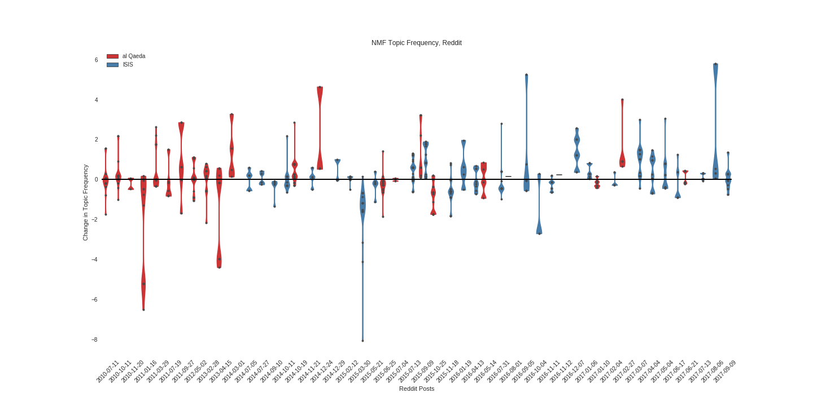 </div> --- class: center background-color:#01BAEF .footnote[Follow along at Wahedi.US, under Current Presentation Laila A. Wahedi, PhD -- @lwahedi -- law98@georgetown.edu] <h2 style="text-transform: none; color:white; text-align:left; margin-bottom:0px">Word Importance: Influence Observed</h2> <img class="plain" src="../figures/line.png" style="float:left; padding:0;margins:0;margin-bottom:0px; align:left; height: 5px; width:75%"> <br> <div style="width:100%;"> 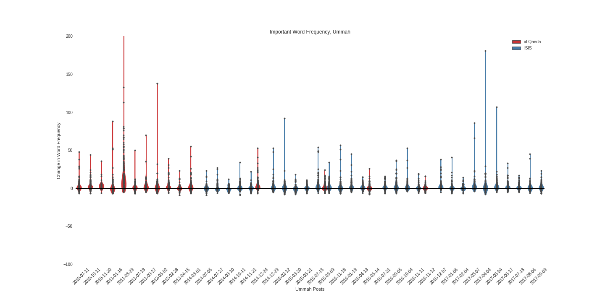 </div> --- class: center background-color:#01BAEF .footnote[Follow along at Wahedi.US, under Current Presentation Laila A. Wahedi, PhD -- @lwahedi -- law98@georgetown.edu] <h2 style="text-transform: none; color:white; text-align:left; margin-bottom:0px">Nouns: No Influence Observed</h2> <img class="plain" src="../figures/line.png" style="float:left; padding:0;margins:0;margin-bottom:0px; align:left; height: 5px; width:75%"> <br> <div style="width:100%;"> 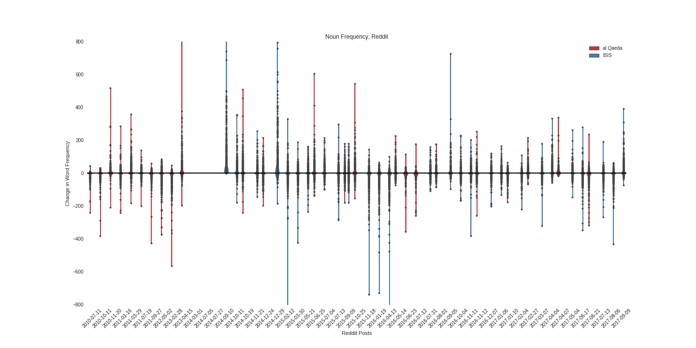 </div> --- class: left background-color:#AF002B <h1 style="margin-bottom:0px; padding:0px;color:white;" align="left">Next Steps</h1> <img align="left" class="plain" src="../figures/line.png" style="padding:0;margins:0;margin-bottom:.5em; align:left; height: 5px; width:75%"> <br> 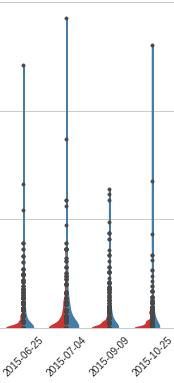 <ul style="color:white;text-align:left"> <li>New target sources</li> <li>Pre-train document embeddings</li> <li>Compare to IS territorial control and bayat statements</li> </ul> <br><br><br><br><br><br><br><br><br><br> <div style="color:white;">Icons made by or adapted from<strong><a href="http://www.freepik.com" style="color:#e6f3f7;" title="Freepik"> Freepik</a></strong> from <a style="color:#e6f3f7;" href="https://www.flaticon.com/" title="Flaticon">www.flaticon.com</a> is licensed by <a style="color:#e6f3f7;" href="http://creativecommons.org/licenses/by/3.0/" title="Creative Commons BY 3.0" target="_blank">CC 3.0 BY</a></div> .footnote[Follow along at Wahedi.US, under Current Presentation Laila A. Wahedi, PhD -- @lwahedi -- law98@georgetown.edu]